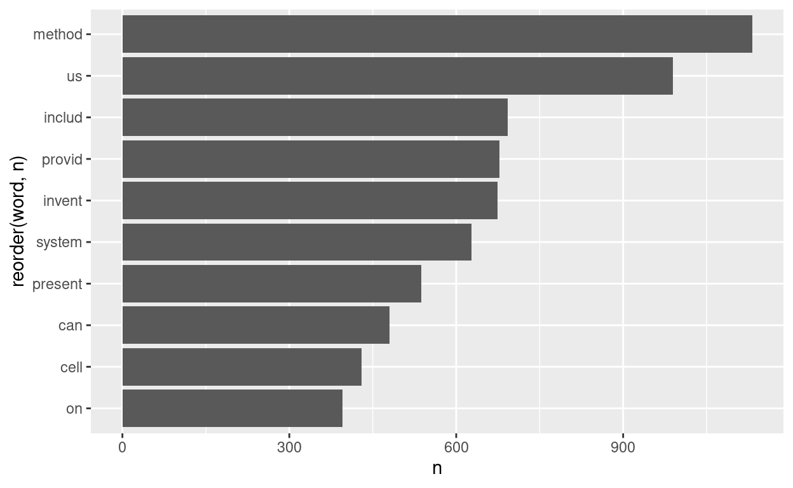
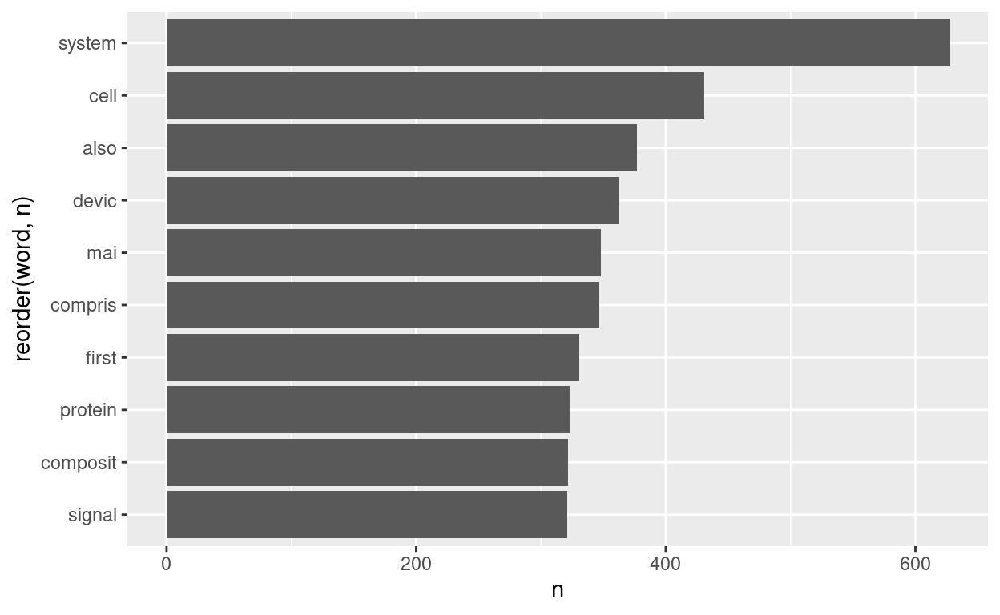
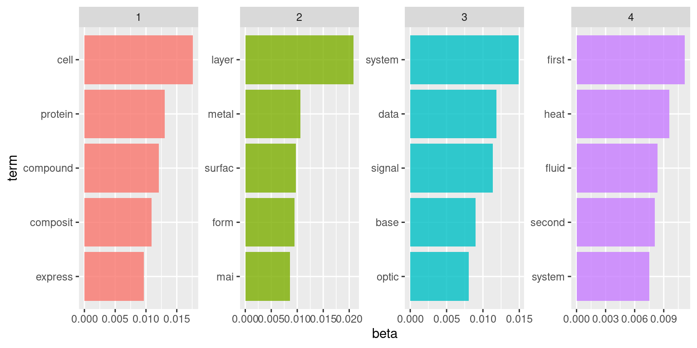

Suppose we wanted to know what types of patents were awarded to UMD. We can look at the information from the abstracts and read through them, but this would take a very long time since there are more than a 1,000 abstracts. Instead, we can use text analysis to help us.
However, as-is, the text from abstracts can be difficult to analyze. We aren’t able to use traditional statistical techniques without some heavy data manipulation, because the text is essentially a categorical variable with unique values for each patent. We need to basically break it apart and clean the data before we apply our data analysis techniques.
In this notebook, we will first use the Patentsview API to pull data from patents awarded to inventors at University of Maryland, including the abstract from each of the patents. Then, we will go through the process of cleaning and processing the text data to prepare it for topic modeling, which is the process of automatically assigning topics to individual documents (in this case, an individual document is an abstract from a patent). We will use a technique called Latent Dirichlet Allocation as our topic modeling technique, and try to determine what sorts of patents were awarded to University of Maryland.
Text analysis is used to extract useful information from or summarize a large amount of unstructured text stored in documents. This opens up the opportunity of using text data alongside more conventional data sources (e.g. surveys and administrative data). The goal of text analysis is to take a large corpus of complex and unstructured text data and extract important and meaningful messages in a comprehensible way.
Text analysis can help with the following tasks:
Information Retrieval: Find relevant information in a large database, such as a systematic literature review, that would be very time-consuming for humans to do manually.
Clustering and Text Categorization: Summarize a large corpus of text by finding the most important phrases, using methods like topic modeling.
Text Summarization: Create category-sensitive text summaries of a large corpus of text.
Machine Translation: Translate documents from one language to another.
Corpus: A corpus is the set of all text documents used in your analysis; for example, your corpus of text may include hundreds of abstracts from patent data.
Tokenize: Tokenization is the process by which text is separated into meaningful terms or phrases. In English this is easy to do for individual words, as they are separated by whitespace; however, it can get more complicated to automate determining which groups of words constitute meaningful phrases.
Stemming: Stemming is normalizing text by reducing all forms or conjugations of a word to the word’s most basic form. In English, this can mean making a rule of removing the suffixes “ed” or “ing” from the end of all words, but it gets more complex. For example, “to go” is irregular, so you need to tell the algorithm that “went” and “goes” stem from a common lemma, and should be considered alternate forms of the word “go.”
TF-IDF: TF-IDF (term frequency-inverse document frequency) is an example of feature engineering where the most important words are extracted by taking account their frequency in documents and the entire corpus of documents as a whole.
Topic Modeling: Topic modeling is an unsupervised learning method where groups of words that often appear together are clustered into topics. Typically, the words in one topic should be related and make sense (e.g. boat, ship, captain). Individual documents can fall under one topic or multiple topics.
LDA: LDA (Latent Dirichlet Allocation) is a type of probabilistic model commonly used for topic modeling.
Stop Words: Stop words are words that have little semantic meaning but occur very frequently, like prepositions, articles and common nouns. For example, every document (in English) will probably contain the words “and” and “the” many times. You will often remove them as part of preprocessing using a list of stop words.
library('ggplot2')
library('httr')
library('jsonlite')
library('tidytext')
library('dplyr')
library('topicmodels')
library('SnowballC')
library('stopwords')For this notebook we use data on patents which we will get from the PatentsView API. The PatentsView platform is built on data derived from the US Patent and Trademark Office (USPTO) bulk data to link inventors, their organizations, locations, and overall patenting activity. The PatentsView API provides programmatic access to longitudinal data and metadata on patents, inventors, companies, and geographic locations since 1976. We won’t go over the details of pulling from the API here, but you can look at the PatentsView website to learn more about how it all works.
Source: https://api.patentsview.org/doc.html
url <- 'https://www.patentsview.org/api/patents/query'
qry <- list(q = '{"assignee_organization":"university of maryland"}',
f='["patent_title","patent_year", "patent_abstract"]',
o='{"per_page":2000}')
request <- GET(url, query = qry)
request$status_code## [1] 200umd_patents <- fromJSON(rawToChar(request$content))$patentsThe first important step in working with text data is cleaning and processing the data, which includes (but is not limited to):
The ultimate goal is to transform our text data into a form an algorithm can work with, because a document or a corpus of text cannot be fed directly into an algorithm. Algorithms expect numerical feature vectors with certain fixed sizes, and can’t handle documents, which are basically sequences of symbols with variable length. We will be transforming our text corpus into a bag of n-grams to be further analyzed. In this form our text data is represented as a matrix where each row refers to a specific job description (document) and each column is the occurence of a word (feature).
First, the text must be separated into individual tokens (generally, individual words). The unnest_tokens function can be used to tokenize, or separate out the paragraph into individual words.
# Tokenizing
patent_tokens <- umd_patents %>%
select(patent_title, patent_abstract) %>%
unnest_tokens(word, patent_abstract)
head(patent_tokens)Currently, the umd_patents data frame has one row per abstract. The unnest_tokens function split up each of those abstracts into individual words, then made each word its own row for that abstract, so now each abstract has as many rows as it has words. However, it is important to aggregate it up, because there are repeat words. This aggregation can be done using count.
patent_tokens %>% count(patent_title, word)Stopwords are words that are found commonly throughout a text and carry little semantic meaning. Examples of common stopwords are prepositions (“to”, “on”, “in”), articles (“the”, “an”, “a”), conjunctions (“and”, “or”, “but”) and common nouns. For example, the words the and of are ubiquitous, so they will not serve as meaningful features, whether to distinguish documents from each other or to describe a given document. There also could be words that need to be removed based on where the corpus of text was obtained or its topic. There are many lists of common stopwords available for public use, both for general documents and for specific contexts, so there is no need to start from scratch.
Stopwords can be eliminated by checking all the words in the corpus against a list of commonly occuring stopwords that can be found courtesy of the get_stopwords function from the tidytext package. To get rid of all the stopwords in get_stopwords that occur in patent_tokens, an anti_join is used.
patent_tokens %>%
anti_join(get_stopwords())## Joining, by = "word"Text can be processed through stemming and lemmatization, or replacing words with their root or simplest form. For example, “systems”, “systematic”, and “system” are all different words, but all these words can be replaced with “system” without sacrificing much meaning.
This section includes an example of the Snowball Stemmer, using mutate to replace the word column with the stemmed version of that column. The data frame that results from the Snowball Stemmer is piped into ggplot to visualize the most common words in the documents.
patent_tokens %>%
anti_join(get_stopwords()) %>%
mutate(word = wordStem(word)) %>%
count(word, sort = TRUE) %>%
head(10) %>%
ggplot(aes(y = reorder(word, n), x = n)) +
geom_col()## Joining, by = "word"
It looks like there are some context-specific stop words here. For example, “invent” isn’t normally a stop word, but it is when talking about patent abstracts. We’ll remove a few, then take another look at the top words in the corpus.
patent_tokens %>%
anti_join(get_stopwords()) %>%
mutate(word = wordStem(word)) %>%
anti_join(data.frame(word = c('method','us','invent', 'includ', 'provid','present','can','on'))) %>%
count(word, sort = TRUE) %>%
head(10) %>%
ggplot(aes(y = reorder(word, n), x = n)) +
geom_col()## Joining, by = "word"
## Joining, by = "word"
This looks better. We’ll stop here for now, but remember that this is an iterative process. If you see any, you can go back and remove more stop words.
A very specific type of object called a Document Term Matrix is needed in order to do topic modeling. This is a way of more efficiently storing the very sparse text matrix. Since most documents will only have a small subset of all possible words, the vast majority of entries in the matrix will be 0.
patent_dtm <- patent_tokens %>%
anti_join(get_stopwords()) %>%
mutate(word = wordStem(word))%>%
anti_join(data.frame(word = c('method','us','invent', 'includ', 'provid','present','can','on'))) %>%
count(patent_title, word) %>%
cast_dtm(patent_title, word, n)## Joining, by = "word"
## Joining, by = "word"Topic modeling, an unsupervised learning method, can be applied to a corpus to discern the high-level topics in the corpus. The discussion of the choices being cleaning and preprocessing data to get the best results permeates throughout this process. Topic modeling is a broad subfield of machine learning and natural language processing. This notebook focuses on a common modeling approach called Latent Dirichlet Allocation (LDA).
In topic modeling, the first assumption is that topics exist in the given corpus, and that some small number of these topics can “explain” the corpus. Topics in this context refer to words from the corpus, in a list that is ranked by probability. A single document can be explained by multiple topics. For instance, an article on net neutrality would fall under the topic “technology” as well as the topic “politics”. The set of topics used by a document is known as the document’s allocation, hence the name Latent Dirichlet Allocation, and each document has an allocation of latent topics allocated by Dirichlet distribution. Latent (or hidden) stands for topics in the documents that are existing but not yet developed or manifested and can be discovered based on observed data, such as words in the documents. Dirichlet refers to distributions that are taken into account when creating topics: a distribution of words in the topic (which words are more or less probable to belong to a given topic) and a distribution of topics in documents (which topic is more or less probable for a given document).
In this tutorial, topic modeling is used in order to determine the types of patents awarded to University of Maryland based on their abstracts.
Latent Dirichlet Allocation (LDA) is a statistical model that generates groups based on similarities. This is an example of an unsupervised machine learning model. That is, we don’t have any sort of outcome variable – we’re just trying to group the abstracts into rough categories.
Let’s try fitting an LDA model.
patent_lda <- patent_dtm %>% LDA(4, control=list(seed=0))The LDA function from topicmodels runs the LDA model on patent_dtm. The tidytext package has some nice tools for working with the LDA topic model object, such as the tidy function. This can be used to extract the per-topic-per-word probabilities, which are denoted by \(\beta\).
patent_lda %>%
tidy(matrix = 'beta')Now that the per-topic-per-word probabilities have been calculated, these word probabilities can be grouped by topic to find the 10 most common words within each topic.
top_terms <- patent_lda %>%
tidy() %>%
group_by(topic) %>%
top_n(5, beta) %>%
ungroup() %>%
arrange(topic, -beta)
top_termsThis data frame can then be graphed using a bar plot.
top_terms %>%
mutate(topic = factor(topic),
term = reorder_within(term, beta, topic)) %>%
ggplot(aes(term, beta, fill = topic)) +
geom_bar(alpha = 0.8, stat = "identity", show.legend = FALSE) +
scale_x_reordered() +
facet_wrap(~ topic, scales = "free", ncol = 4) +
coord_flip()
Topic modeling allows for the categorization of topics in the patent abstracts. LDA assumes that each document is a mixture of the topics, and assigns a per-document-per-topic probabilities, denoted by \(\gamma\). The \(\gamma\) probabilities can be extracted the same way as the \(\beta\) probabilities, except with the argument matrix='gamma' instead. This essentially gives the proportion that each document is about each topic.
patent_lda %>%
tidy(matrix='gamma')